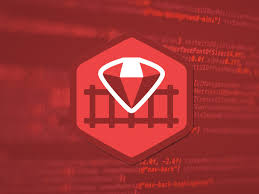

Take This Survey to Help Select your Programming Language!
Introduction
Congratulations! You have decided that you want to check out the world of programming! As I am sure, you have done some research and now know that there is a lot of different languages out there. It can be extremely diffucult trying to nail down what language is best suited for you. Don't fret! This is where we come in! We have designed a short survey for you to take that will suggest one of five languages for you based on your answers!
You Got C#!
C# (pronounced "C sharp") is a programming language that is designed for building a variety of applications that run on the .NET Framework. C# is simple, powerful, type-safe, and object-oriented

You Got Ruby on Rails!
Ruby on Rails, or simply Rails, is a server-side web application framework written in Ruby under the MIT License. Rails is a model–view–controller framework, providing default structures for a database, a web service, and web pages.
You Got PHP!
PHP (recursive acronym for PHP: Hypertext Preprocessor) is a widely-used open source general-purpose scripting language that is especially suited for web development and can be embedded into HTML.